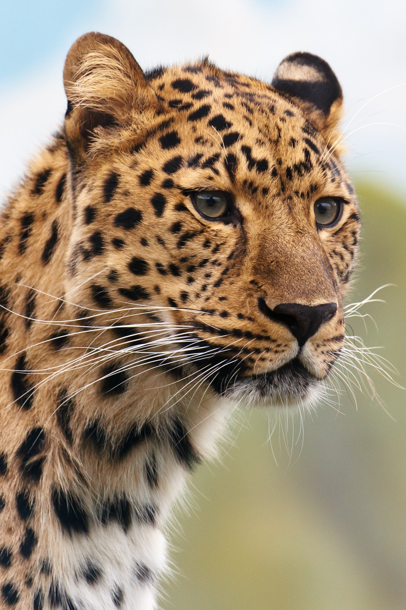
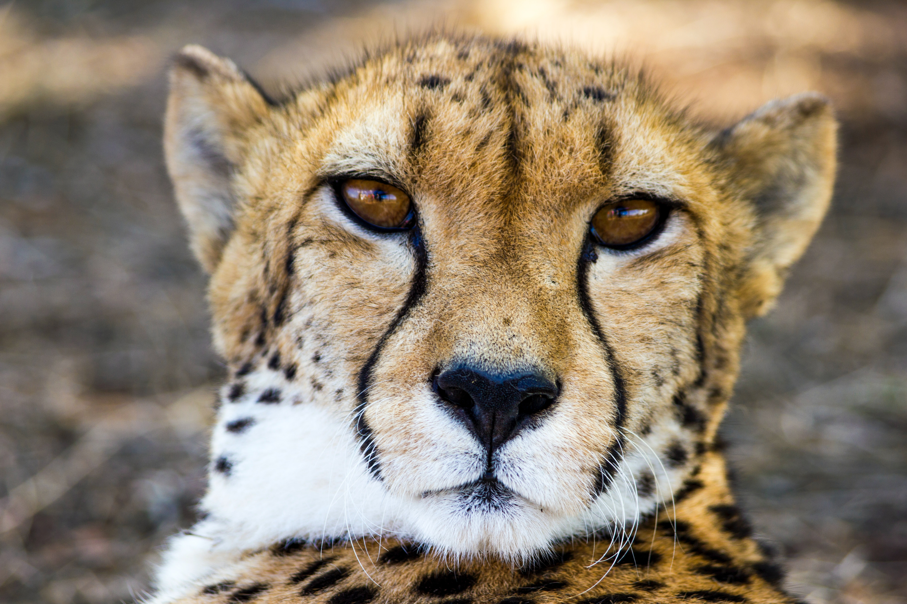

Leopards
I have other articles about animals.You can look at it if you want.Contemporary records suggest that the leopard occurs in only 25% of its historical global range.[5][6]
Leopards are hunted illegally, and their body parts are smuggled in the wildlife trade for medicinal practices and decoration.[7][8]
Compared to other wild cats, the leopard has relatively short legs and a long body with a large skull.
Its fur is marked with rosettes. It is similar in appearance to the jaguar, but has a smaller, lighter physique, and its rosettes are generally smaller, more densely packed and without central spots.
Both leopards and jaguars that are melanistic are known as black panthers. The leopard is distinguished by its well-camouflaged fur, opportunistic hunting behaviour, broad diet, strength, and its ability to adapt to a variety of habitats ranging from rainforest to steppe, including arid and montane areas. It can run at speeds of up to 58 kilometres per hour (36 mph).[9] The earliest known leopard fossils excavated in Europe are estimated 600,000 years old, dating to the late Early Pleistocene.[2] Leopard fossils were also found in Japan.[10]
The leopard's fur is generally soft and thick, notably softer on the belly than on the back.[20] Its skin colour varies between individuals from pale yellowish to dark golden with dark spots grouped in rosettes. Its belly is whitish and its ringed tail is shorter than its body. Its pupils are round.[21] Leopards living in arid regions are pale cream, yellowish to ochraceous and rufous in colour; those living in forests and mountains are much darker and deep golden. Spots fade toward the white underbelly and the insides and lower parts of the legs.[22] Rosettes are circular in East African leopard populations, and tend to be squarish in Southern African and larger in Asian leopard populations.
The leopard's fur is generally soft and thick, notably softer on the belly than on the back.[20] Its skin colour varies between individuals from pale yellowish to dark golden with dark spots grouped in rosettes. Its belly is whitish and its ringed tail is shorter than its body. Its pupils are round.[21] Leopards living in arid regions are pale cream, yellowish to ochraceous and rufous in colour; those living in forests and mountains are much darker and deep golden. Spots fade toward the white underbelly and the insides and lower parts of the legs.[22] Rosettes are circular in East African leopard populations, and tend to be squarish in Southern African and larger in Asian leopard populations.
The fur tends to be grayish in colder climates, and dark golden in rain forest habitats.[9] The pattern of the rosettes is unique in each individual.[23][24]
Its fur tends to grow longer in colder climates.[25] The guard hairs protecting the basal hairs are short, 3–4 mm (1⁄8–5⁄32 in) in face and head, and increase in length toward the flanks and the belly to about 25–30 mm (1–1 1⁄8 in). Juveniles have woolly fur, and appear to be dark-coloured due to the densely arranged spots.[23][26] Its white-tipped tail is about 60–100 cm (24–39 in) long, white underneath and with spots that form incomplete bands toward the tail's end.[27] The leopard's rosettes differ from those of the jaguar, which are darker and with smaller spots inside. The cheetah has small round spots without any rosettes.[21]
Like most cat species, the leopard has a diploid chromosome number of 38.[28] The chromosomes include four acrocentric, five metacentric, seven submetacentric and two telocentric pairs.[29]
The largest skull recorded for a black panther from India, recorded in 1920, measured 28 cm (11 in) in basal length, and 20 cm (8 in) in breadth, and weighed 1,000 g (2 lb 4 oz). The skull of a West African panther measured 28.6 cm (11 1⁄4 in) in basal length, and 18.1 cm (7 1⁄8 in) in breadth, and weighed 790 g (1 lb 12 oz).[30]